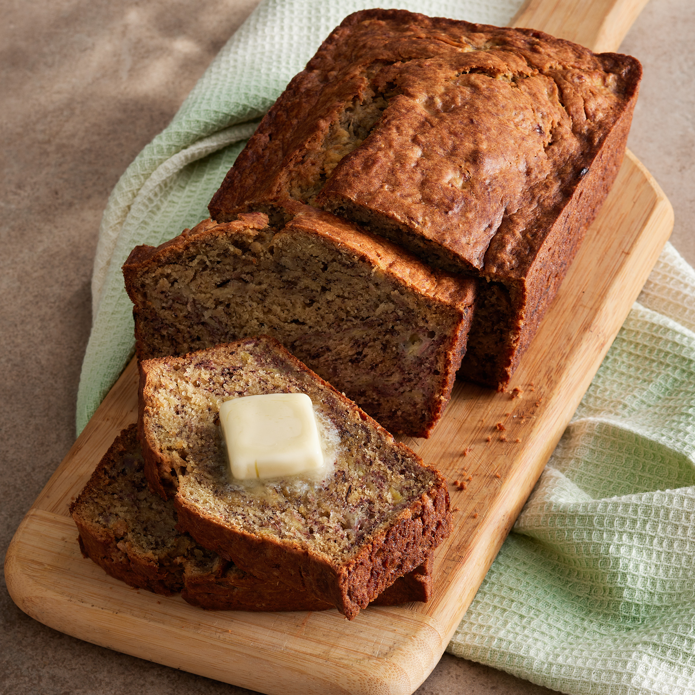

Banana bread

Description
Put those ripe bananas to use in the best banana nreak recipe ever.
Moist and deslicious, it's easy to make!
Ingredients
You will need the folowing ingredients to make this recipe
2 cups all-purpose flour
1 teaspoon salt
1/4 teaspoon salt
1/2 cup butter
3/4 cup brown sugar
2 eggs, beaten
2 1/3 cups mashed overripe bananas
Steps
Preheat oven to 175 degrees C
Lightly grease a 9x5 ich loaf pain
In a large nowl, combine flour, baking soda and salt
In a seperate bowl, cream together butter and brown sugar
Stir in eggs and mashed bananas until well blended
Stir banana mixture into flour mixture; stir just to moisten
Pour batter into prepared loaf pan
Bake in preheated oven for 60 to 65 miutes, until a toothpick inserted
into the centre of the loaf comes out clean
Let bread cool in pan for 10 minutes, then turn out onto a wire rack